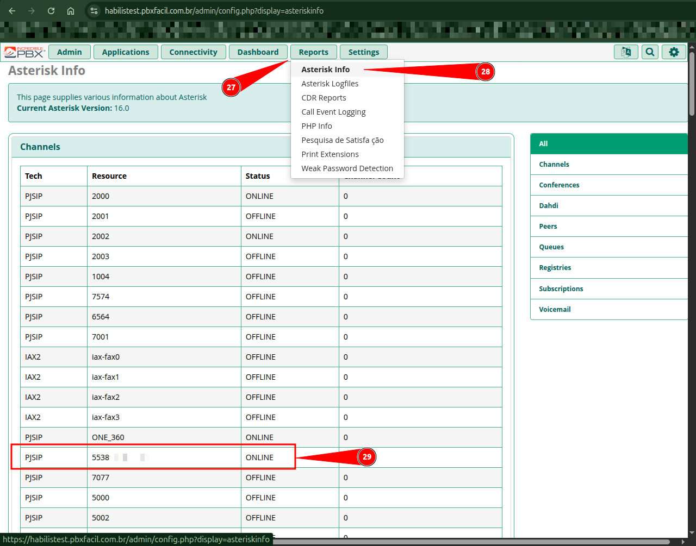
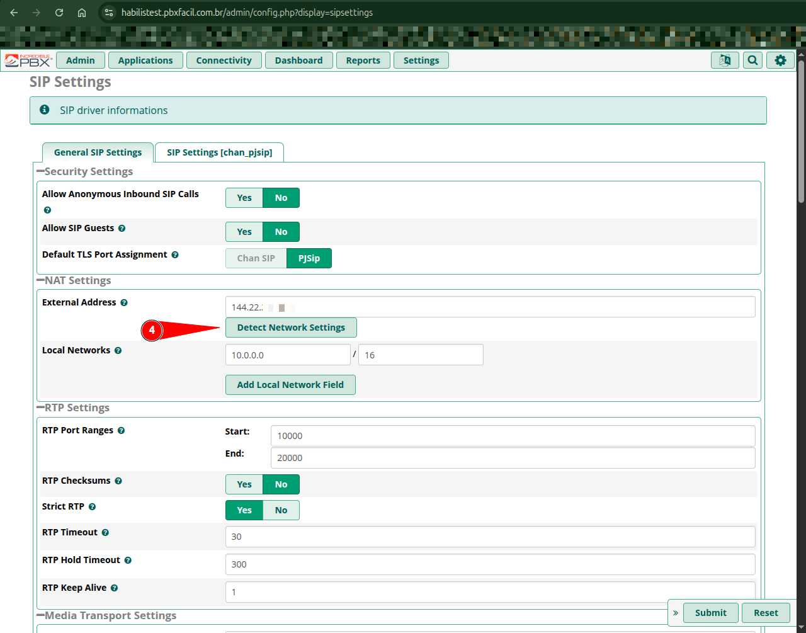

Portal de Telefonia VoIP e PABX Fácil
Guia mestre de arquitetura, operação e parametrização do servidor Asterisk / FreePBX integrado à plataforma AtenderBem.

1. Visão Geral da Arquitetura
O PABX Fácil é o motor de telefonia em nuvem do AtenderBem. Ele integra canais telefônicos tradicionais (PSTN / E1 / SIP Trunk) e ligações de voz da WhatsApp Cloud API Oficial (Meta) em uma única central inteligente com Webphone integrado no navegador dos atendentes.
2. Capítulos da Documentação de Telefonia
Acesse os guias detalhados de cada módulo nos cards abaixo:

1. Troncos SIP & WhatsApp Cloud API
Configuração de troncos de operadoras VoIP e conexão segura com WhatsApp Cloud API Meta (TLS, SRTP e Opus).

2. Rotas de Entrada e Saída
Controle de DIDs de entrada, regras de encaminhamento e padrões de discagem de saída (Dial Patterns).

3. Gestão de Ramais & Softphones
Criação de ramais PJSIP, configuração no MicroSIP/Telefones IP e vínculo com atendentes no AtenderBem.

4. Filas de Atendimento (Queues)
Estratégias de distribuição (ringall, rrmemory, leastrecent), agentes estáticos/dinâmicos e transbordo.
5. URAs, Gravações & Anúncios
Upload de áudios WAV, avisos gravados (Announcements) e estruturação de menus de URA (IVR) com DTMF.
6. Condições de Horário (Time Conditions)
Horário comercial, atendimento noturno, feriados e códigos de sobreposição manual via ramal.

7. Custom Destinations & ARI Bridge
Conexão do Asterisk à inteligência de URA Avançada do sistema AtenderBem através de pontes ARI.
8. Auditoria de Chamadas & Análise de CDR
Decifre as 25 colunas do CDR, detecte atendentes que recusam chamadas e consulte o banco em SQL.
9. Comandos CLI & Resolução de Problemas
Guia de comandos de console traduzidos e solução definitiva para áudio mudo, NAT e queda de chamadas.
3. Topologia de Fluxo de Voz
│ CLIENTE LIGA (PSTN / │
│ WhatsApp Cloud API) │
└────────────┬────────────┘
▼
┌─────────────────────────┐ [Fora do Horário]
│ Inbound Route / DID ├──────────────────────► [ Anúncio / Caixa Postal ]
└────────────┬────────────┘
│ [Horário Comercial]
▼
┌─────────────────────────┐
│ URA / IVR Interativa ├──────────┐ [Opção 2]
└────────────┬────────────┘ ▼
│ [Opção 1] ┌─────────────────────────┐
▼ │ Fila Financeiro (Queue) │
┌─────────────────────────┐ └──────────┬──────────────┘
│ Fila Suporte N1 (Queue) │ │
└────────────┬────────────┘ ▼
│ ┌─────────────────────────┐
└───────────────►│ Webphone no AtenderBem │
│ (Atendente Conectado) │
└─────────────────────────┘